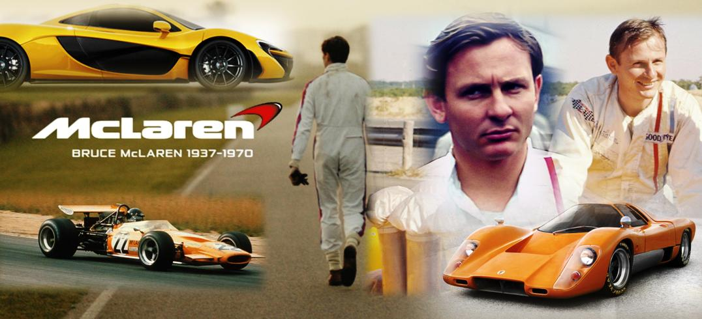

Life is measured in achievement, not in years alone
- 1937 - Born in Oakland,New Zealand
- 1952 - First official race start
- 1957 - Joined Formula-2 series
- 1958 - Formula One debut
- 1959 - First win in Formula One
- 1962 - Monaco Grand prix win
- 1963 - Founded McLaren Automotive
- 1966 - 24 Hours of Le Mans victory
- 1968 - First win with the McLaren car
- 1970 - 1970 died on tests